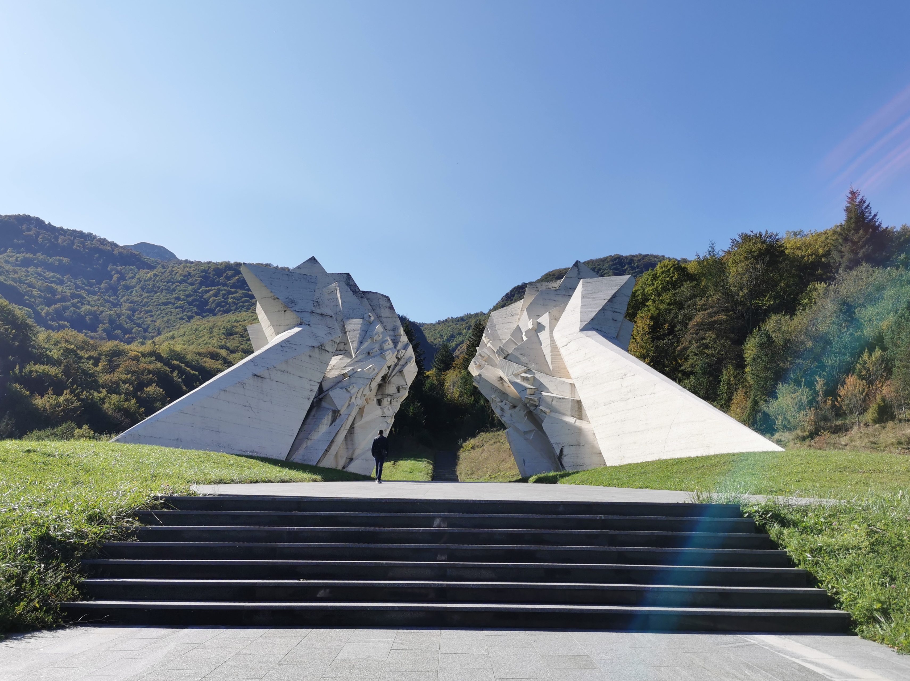
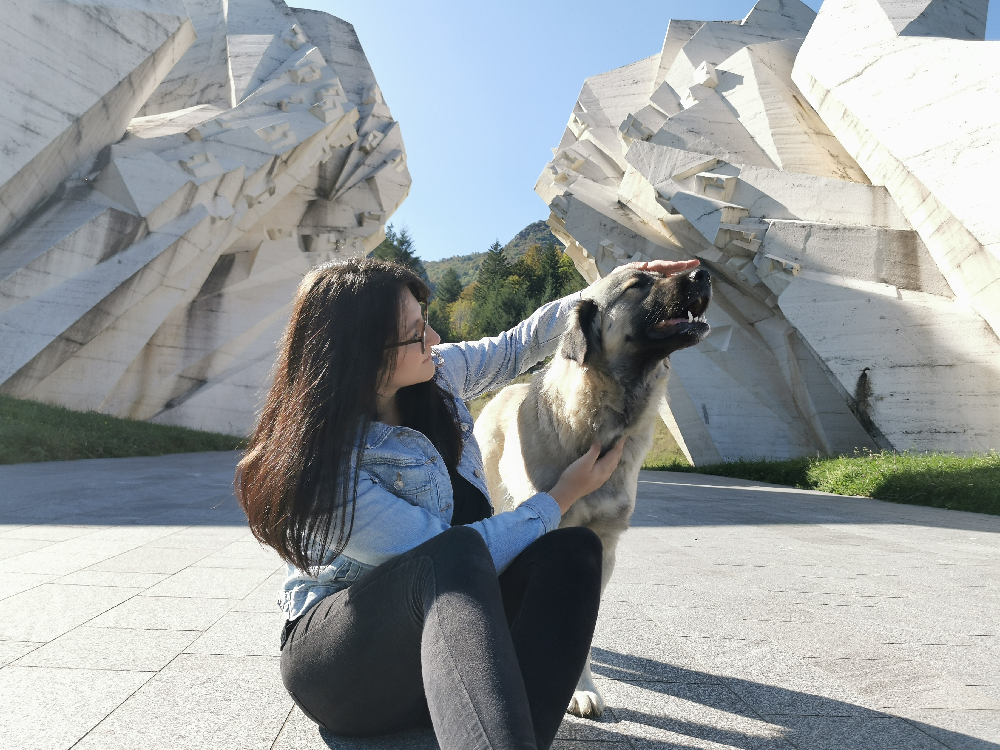
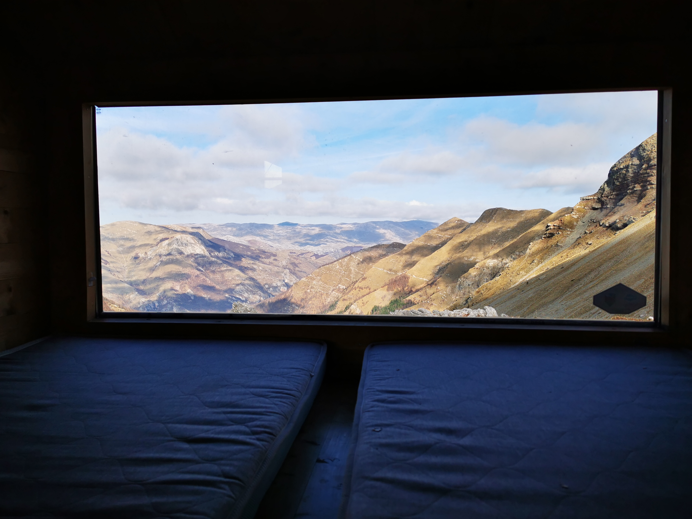
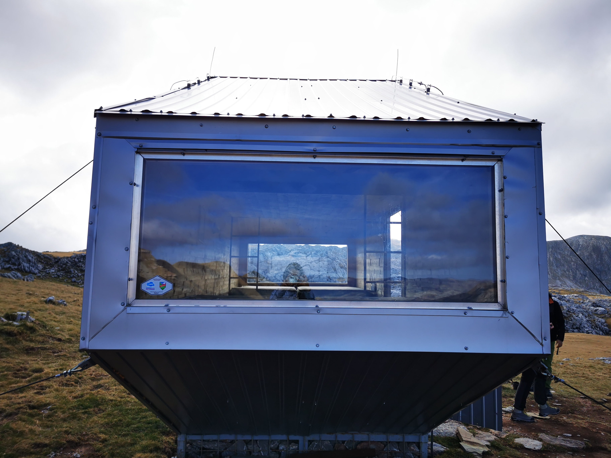
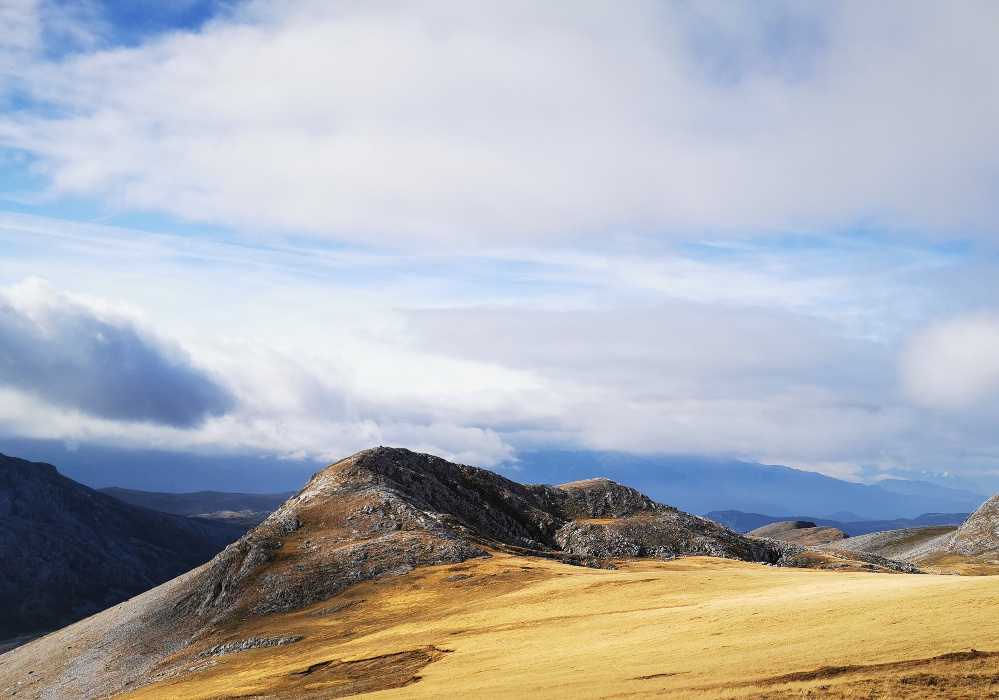
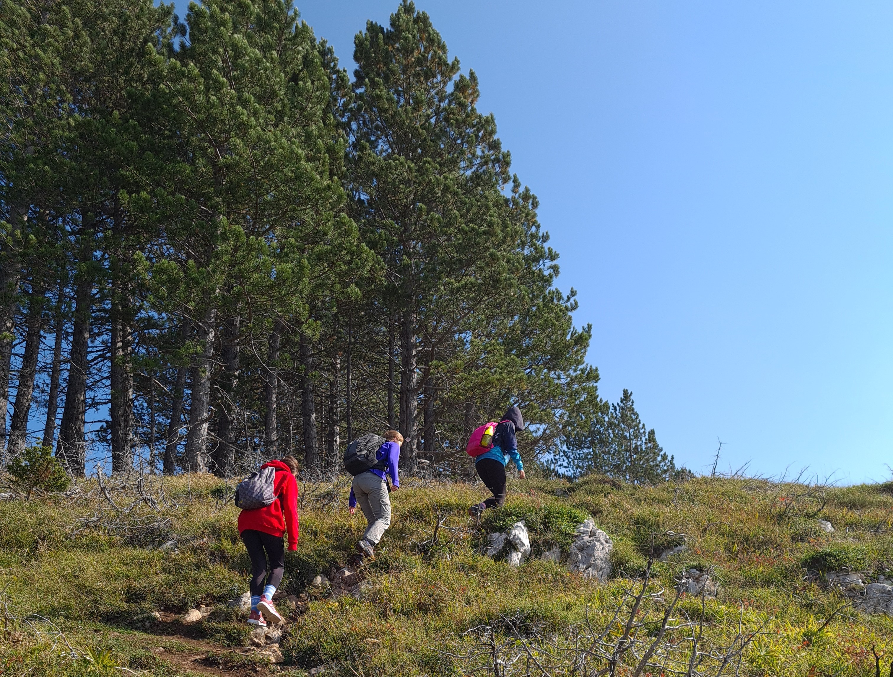
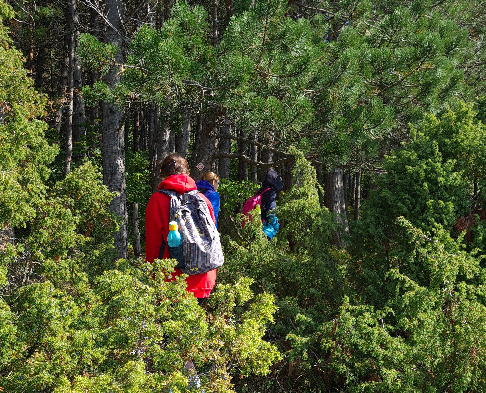
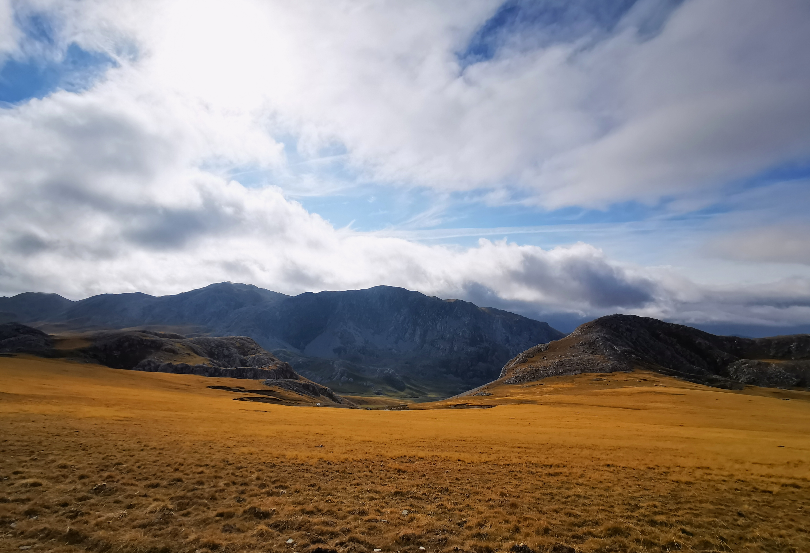

Nacionalni park Sutjeska.

Pas nacionalnog parka Sutjeska.
Vela Pliš, je greben u zaleđu Rijeke a ovo je jedan njegov vrh.

Pogled iz bivka.

Prvi bivak na Visočici.

Visočica čini prirodnu granicu između središnje Bosne i Gornje Hercegovine.

Put ka planinarskom domu Jure Franko

Okrobarski pohod.

Visoravan Visočice.
More u rano ujutro.
Otisak mjeseca u moru.